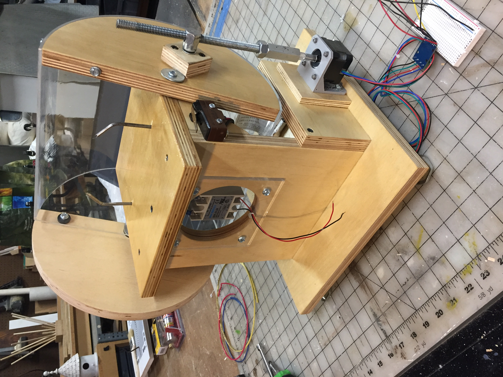

This weekend I fabricated and assembled the structure of the two-nail hotdog cooker. Since this week's assignment was to use an output device I connected a stepper motor to open and close the hotdog chamber cover.
Return to my home page.
Hotdog engineering!
Cutting an acrylic tube thing in half on the table saw for the cooker safety cover.
The chassis is constructed of my favorite building material: 3/4" baltic birch plywood (I like the look of the multi-core edge).
This is a side view of the "stepper motor driven linear-to-rotational" actuator.
I had to add a half-circle shaped counter weight in order to get the stepper motor to smoothly move the cover thru its full range of motion.
Notice the micro switch that is engaged when the cover reaches the closed/safe position. This switch will only allow 120 volts at the solid state relay and nails when the cover is closed.
Here is a screen shot of the Arduino program I used to open and close the cover. It turns the threaded rod 32 revolutions; that is about 2 inches. I plan to cut this program in half (open program and close program), then replace the current servo motor code in my main hotdog cooker code with these stepper motor control codes. I may have to move some pin assignments around. The stepper uses 4 outputs, and the servo only is currently using one.
The solid state relay (120vac) is mounted behind acrylic for safety, yet the LED is still visible.